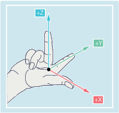
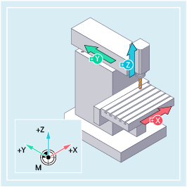
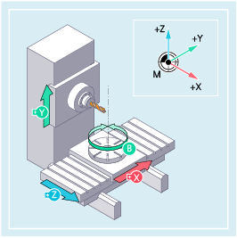

The machine coordinate system comprises all the physically existing machine axes.
Reference points and tool and pallet changing points (fixed machine points) are defined in the machine coordinate system.
If programming is performed directly in the machine coordinate system (possible with some G commands), then the physical axes of the machine are directly addressed. Any workpiece clamping that is present is not taken into account.
| Note |
|
If there are various machine coordinate systems (e.g. 5-axis transformation), then an internal transformation is used to map the machine kinematics on the coordinate system in which the programming is performed. |
The orientation of the coordinate system relative to the machine depends on the machine type.
The axis directions follow the so-called "three-finger rule" of the right hand (according to DIN 66217):
Standing in front of the machine, the middle finger of the right hand points in the opposite direction to the infeed of the main spindle. It thus points in the +Z direction.
The thumb points in the +X direction.
The index finger points in the +Y direction.

Rotary motion around the coordinate axes X, Y and Z are designated A, B and C. The direction of rotation is obtained from the direction of the rotary motion when looking in the positive direction of the coordinate axis:
Direction of the rotary motion | Direction of rotation |
|---|---|
clockwise | positive |
counter-clockwise | negative |
X, Y, Z | Vertical coordinate axes arranged on top of one another |
A, B, C | Rotary axes, rotating around X, Y, Z |
The position of the coordinate system resulting from the "three-finger rule" can have a different orientation for different machine types, which are shown in the following two examples:
|  Vertical 3-axis milling machine |  Horizontal 4-axis milling machine |
See also:
Overview of the various coordinate systems
What is the relationship between the various coordinate systems?